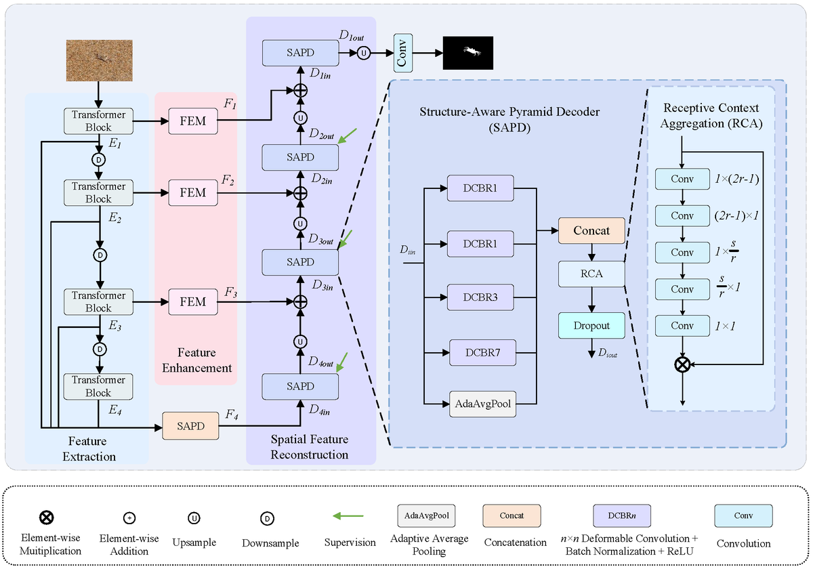
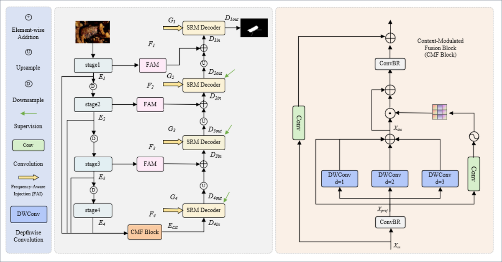
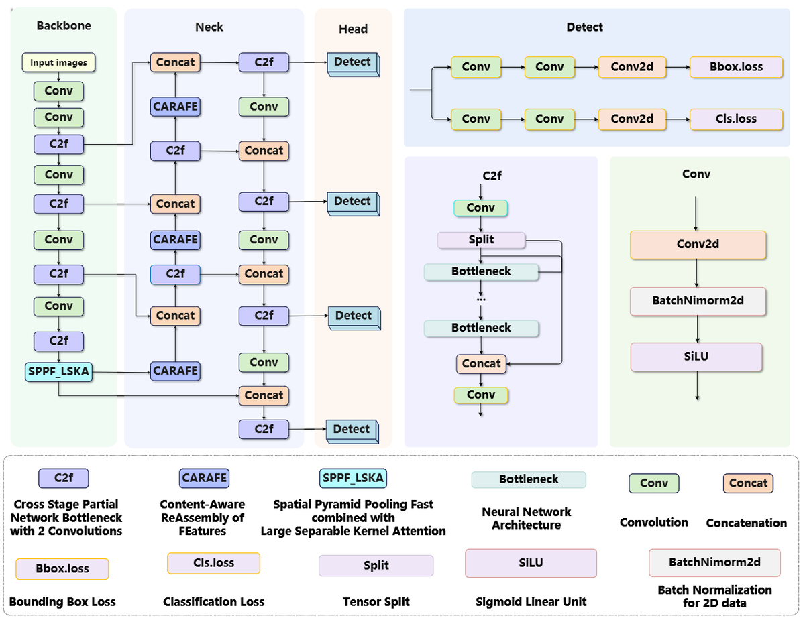
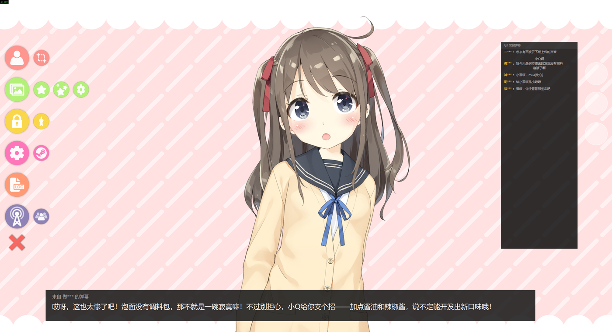
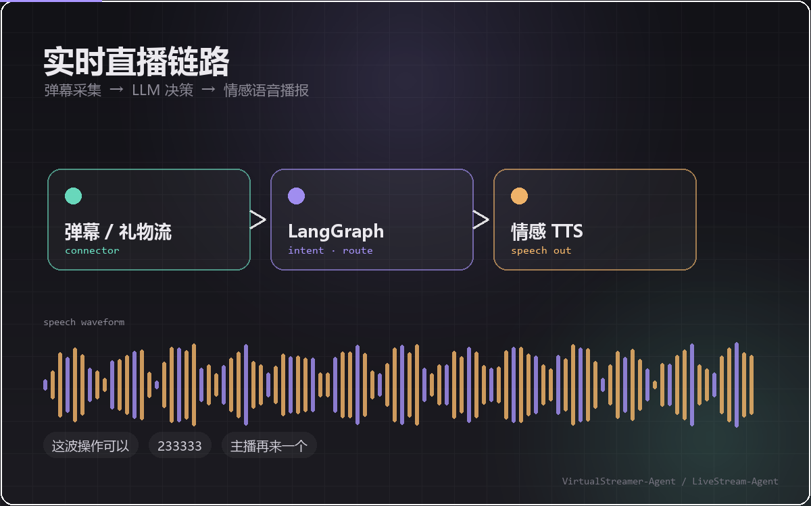
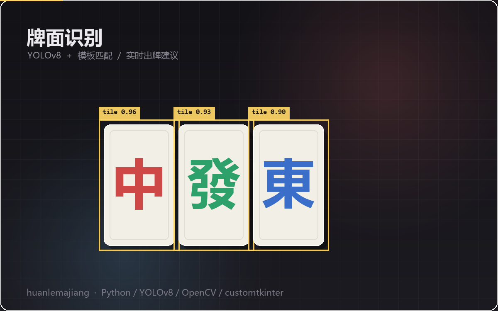
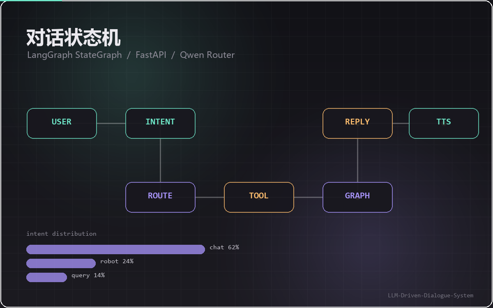
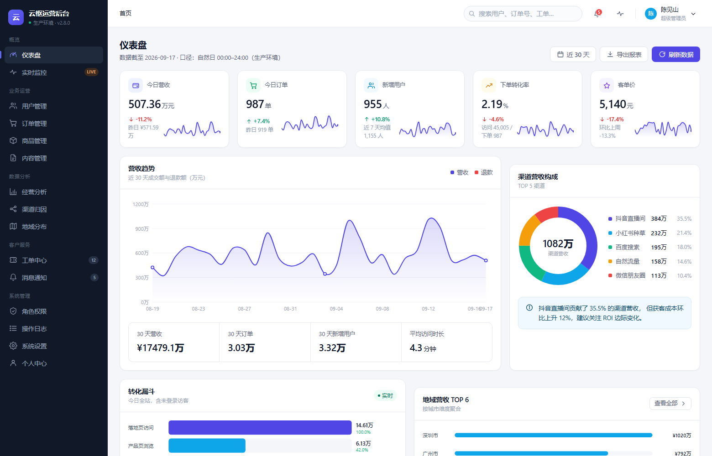

AdaS-Net
伪装目标检测。Swin Transformer 主干建立长程语义表示，结构感知金字塔解码器（SAPD）与 感受野上下文聚合（RCA）补回被下采样抹掉的边界细节，按「看—增强—重建」三阶段推进。
Swin Transformer · SAPD · RCA
Computer Vision · LLM Agents
AI Engineer & Researcher
我做计算机视觉与 LLM Agent 的工程落地。研究方向是伪装目标检测与遥感小目标检测， 相关成果以 AdaS-Net、FGMNet、STD-YOLO 三个 PyTorch 项目开源；工程上更关心模型怎么 真正跑起来——从直播弹幕驱动的虚拟主播，到实时牌面识别，再到能交付的运营后台。
我的习惯是先把链路打通，再逐段优化：数据进得来、模型跑得动、结果看得见、系统扛得住。
按研究、Agent、Web 三类整理，向下滚动即可看全部；每一条都配了仓库里的真实截图或架构图。




虚拟主播 AI 助手：直播弹幕实时采集 → LangGraph 状态机做意图路由与决策 → 情感语音播报， 另配一套运营后台管理场次、人设与算法看板。上图是实际运行的桌面端。
LangGraph · Qwen · 情感 TTS
查看仓库 4

上一代实时虚拟主播实现，也是 VirtualStreamer 的链路原型：弹幕理解、模型决策与语音合成 被串成一条低延迟闭环，先把「能实时响应」跑通，再谈效果优化。
Python · LLM · Speech

实时麻将助手。PyAutoGUI 抓屏幕画面，YOLOv8 识别牌面并用模板匹配兜底，策略模块根据手牌 给出打牌建议，customtkinter 做桌面 GUI。
YOLOv8 · OpenCV · customtkinter

面向任务的对话框架。用 LangGraph 组织状态流转，Qwen 做意图路由，把 chat / robot / query 三类请求拆到独立分支处理，FastAPI 对外提供服务。
LangGraph · FastAPI · Qwen

还有一些早期学习项目没放进来，可以去 GitHub 仓库列表 看全部 14 个公开仓库。
针对目标与背景高度相似的场景，分别从结构感知与频域引导两个角度建模边界， 缓解边界模糊与结构恢复不完整的问题。
面向遥感图像中的小目标舰船检测，用增强的信息关联机制降低复杂背景下的漏检与误检。
把弹幕理解、模型决策与情感语音串成低延迟闭环，并配套运营侧的管理与任务调度。
以 LangGraph 状态机组织对话流程，结合 Qwen 做意图路由，把对话、工具调用与 语音播报拆成可观测的节点。
云枢运营后台零前端构建，图表以内联 SVG 手写，便于在内网环境直接部署。
从训练、导出到实时推理的完整链路，覆盖 GPU 环境配置与推理性能调优。
Languages
Vision & Models
Agents & Backend
Speech